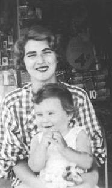

Next: Home winemaking Up: Other Recipes


Next: Home
winemaking Up: Other
Recipes

My grandmother
and my father Sheldon Chaiken in Philadelphia in 1934. The sign
in the back advertises lightbulbs for 4¢ each.
Thanks to my mother Shirley Chaiken and my aunt Roz Chaiken for passing along this version of the traditional recipe.
1 pound (454 g) fine Pennsylvania Dutch noodles
6 eggs
1 quart (0.94 L) milk
½ pound (277 g) cream cheese
½ pound (277 g) butter
4 T (60 mL) sugar
graham cracker crumbs for topping
canned cherries (optional)
Cut the noodles into a 1" (2.5 cm) length and cook them according to package directions. Beat the eggs with the milk. Mix all the ingredients (except for the crumbs) together and pour into a large flat pan about 14"x9"x2" (40 cm x 25 cm x 5 cm). Bake for 30 minutes at 350° F (175° C). Sprinkle the graham cracker crumbs on top and bake for another 30 minutes. Let cool and serve with canned cherries on top.